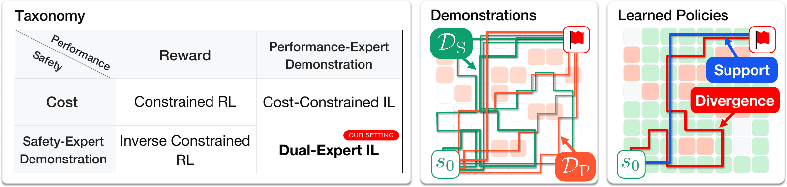
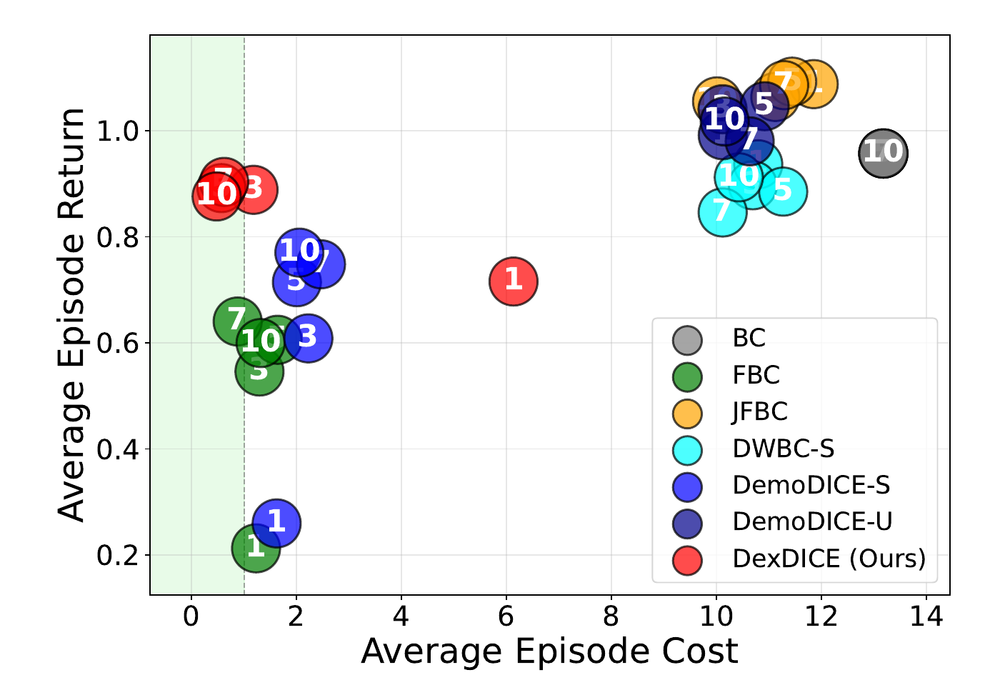
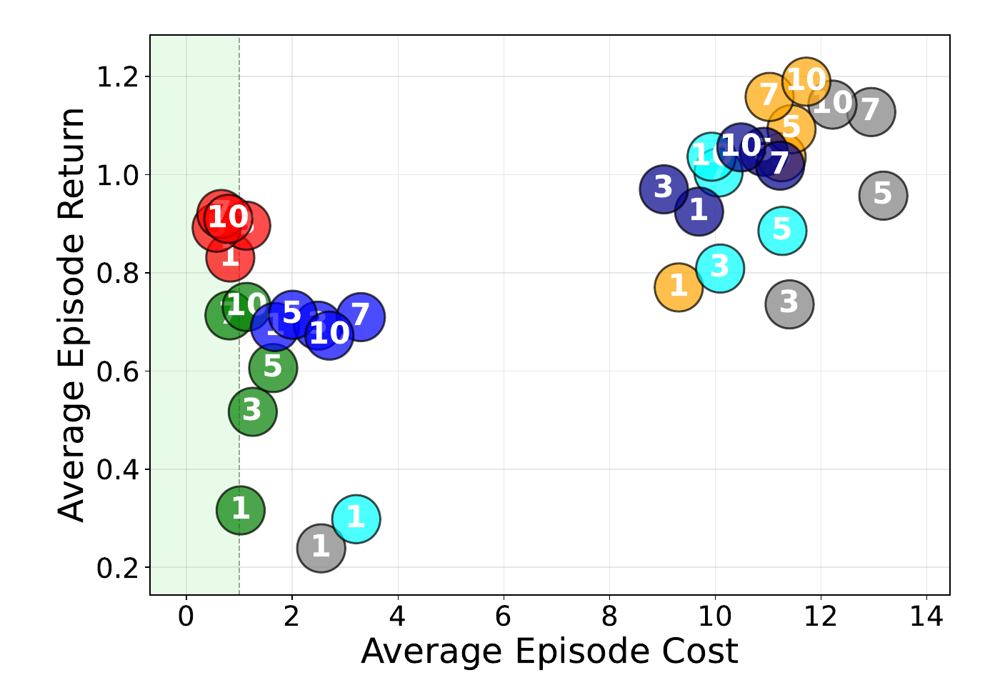
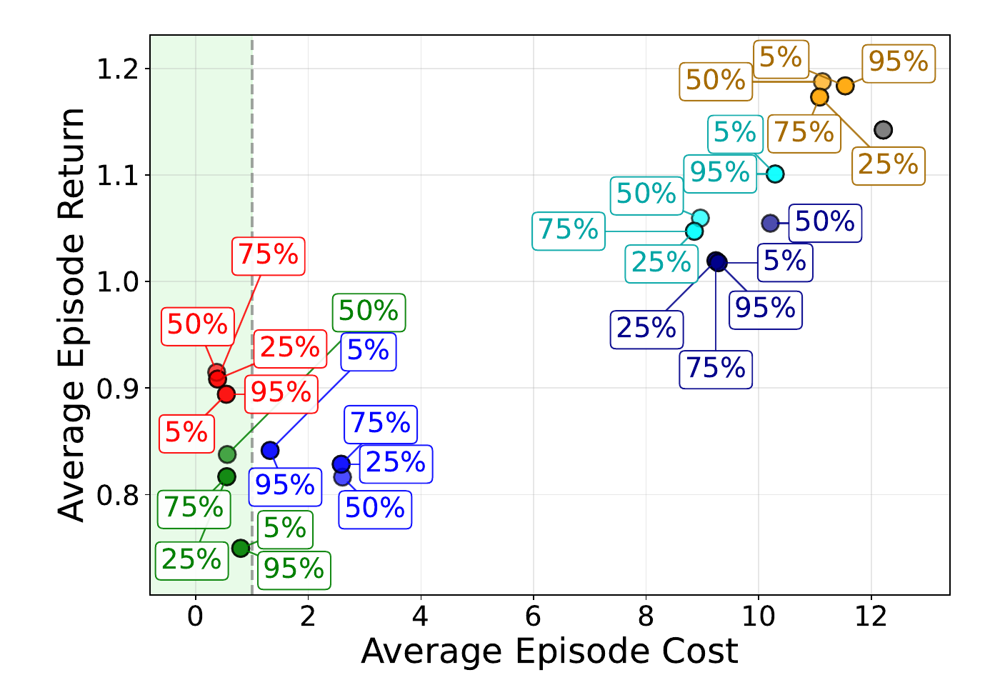
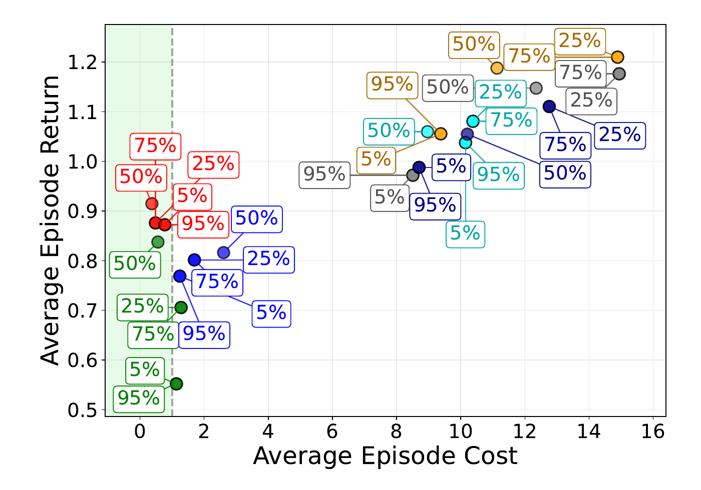
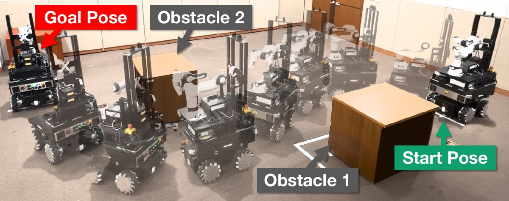

NeurIPS 2026
DexDICE: Reconciling Safety and Performance via Dual-Expert Offline Imitation Learning

Abstract
Safe offline imitation learning often requires either a hand-designed cost function or demonstrations that are both safe and high-performing. DexDICE instead learns from two complementary sources: safe demonstrations that may be suboptimal and performant demonstrations that may violate safety guidelines. It aligns with performant behavior while constraining the policy to the estimated support of safe behavior. The paper analyzes safety for the ideal support-constrained solution and evaluates the practical method on a re-curated DSRL benchmark and a physical mobile-robot navigation task trained from human demonstrations.
Method
DexDICE learns from safe demonstrations \(\mathcal{D}_{\mathrm{S}}\), performant demonstrations \(\mathcal{D}_{\mathrm{P}}\), and a larger unlabeled dataset \(\mathcal{D}_{\mathrm{U}}\), with state-action distributions \(d_{\mathrm{S}}\), \(d_{\mathrm{P}}\), and \(d_{\mathrm{U}}\).
Why a support constraint, not distribution matching
A divergence regularizer such as \(D_{\mathrm{KL}}(d \,\|\, d_{\mathrm{S}})\) pulls the policy toward the safe expert, including its suboptimality. DexDICE uses only the support of the safe demonstrations: it restricts where the policy can act, not how often.
Support-constrained DICE
DICE (stationary DIstribution Correction Estimation) casts policy optimization as a convex problem over stationary state-action distributions \(d\) rather than policies. It learns the correction ratio \(w(s,a) := d(s,a)/d_{\mathrm{U}}(s,a)\), which reweights the offline data toward the target distribution, so training needs only samples from a static dataset and no environment interaction.
DexDICE adds the safe-support constraint to this framework. Because \(d\) sums to one, the constraint is a single linear equality:
where \(\mathbb{1}_{d_{\mathrm{S}}}\) is the indicator of \(\mathrm{supp}(d_{\mathrm{S}})\). Adding the Bellman flow constraints gives
With multipliers \(\lambda\) (support) and \(\nu(s)\) (Bellman flow), the correction ratio \(w\), and \(r_{\mathrm{P}} := d_{\mathrm{P}}/d_{\mathrm{U}}\), the Lagrangian involves only expectations over \(d_{\mathrm{U}}\):
The maximization over \(w\) has a closed form, leaving a minimization over \(\nu\) and \(\lambda\):
Intuition: The term \(\lambda\,\mathbb{1}_{d_{\mathrm{S}}}\) up-weights \(w^*\) inside \(\mathrm{supp}(d_{\mathrm{S}})\) by a factor \(e^{\lambda}\), and \(\log r_{\mathrm{P}}\) steers it toward performant behavior. The policy is extracted from \(w^*\) by weighted behavioral cloning.
Estimating the safe support without unsafe labels
The unsafe distribution \(d_{\mathrm{N}}\) is never observed, so DexDICE trains a safe-vs-unlabeled discriminator \(\hat r_{\mathrm{S}} \approx d_{\mathrm{S}}/d_{\mathrm{U}}\). Writing \(d_{\mathrm{U}} = \eta\, d_{\mathrm{S}} + (1-\eta)\, d_{\mathrm{N}}\) with class prior \(\eta\) gives
The two ratios are monotonically related, so \(\hat r_{\mathrm{S}}\) ranks pairs in the same order as the safe-vs-unsafe ratio (rank consistency) and can be thresholded without estimating \(\eta\). The threshold is set by a target false-negative rate \(\kappa\):
Fewer than a \(\kappa\) fraction of safe demonstration pairs are rejected. All benchmark results use \(\kappa = 0.01\).
- Discriminators\(\hat r_{\mathrm{S}} \approx d_{\mathrm{S}}/d_{\mathrm{U}}\), \(\hat r_{\mathrm{P}} \approx d_{\mathrm{P}}/d_{\mathrm{U}}\)
- \(\kappa\)-quantile CutoffEstimated safe support \(\hat{\mathbb{1}}_{d_{\mathrm{S}}}\)
- DICE CorrectionOptimize \(\nu, \lambda\) to obtain \(w^*\)
- Policy ExtractionWeighted BC
Key theoretical result
Under some assumptions, if \(\kappa\) exceeds the boundary mass \(\kappa_0\) by a finite-sample margin, \(\kappa > \kappa_0 + O(|\mathcal{D}_{\mathrm{S}}|^{-1/2})\), the ideal support-constrained policy \(\pi_\kappa\) avoids the reachable unsafe region \(\mathbf{N}\):
This guarantee holds for the ideal policy whose support lies entirely within the estimated safe support.
Experiments
DSRL Benchmark: Re-curated to Dual-Expert IL Setting
With a single fixed \(\kappa\) = 0.01 across all 38 tasks, DexDICE has the highest group-mean return among methods whose group-mean cost satisfies the constraint. It is safe on 31 tasks and has the best safe return on 19, including ties within one standard error.
| Task group | DexDICE return | Best group-safe baseline | DexDICE cost | Safe tasks |
|---|---|---|---|---|
| Safety Gymnasium | 0.37 | 0.27 DemoDICE-S | 0.71 | 17/21 |
| Bullet Safety Gym | 0.59 | 0.44 FBC, CDT | 0.63 | 7/8 |
| MetaDrive | 0.50 | 0.33 DemoDICE-S | 0.69 | 7/9 |
Return and cost are normalized group means (safe when cost ≤ 1). “Best group-safe baseline” is the highest-return baseline among those satisfying that group-mean cost threshold. Safe-task counts use each task's cost constraint.
Safe: mean normalized cost within the threshold (cost ≤ 1). Best: highest return among safe methods on a task, including ties within one standard error. Hover over or tap a bar to list the tasks.
Controlled Experiments: Robustness to Data Quantity and Quality
On six Safety Gymnasium tasks, we vary the number of safe or performant demonstrations and the fraction of safe-high demonstrations in each set. Each plot shows average return against average cost; the green region satisfies the cost constraint, and red points are DexDICE.




DexDICE generally maintains safety and the highest return among safe methods. Performance weakens with only two safe trajectories or at very low performant-set quality. Select a plot to open it at full size.
Real-world Mobile-robot Navigation
Policies were trained from human teleoperation data and evaluated over ten physical trials per method. DexDICE reached the goal in all ten trials with no measured unsafe-distance time steps.

| Method | Success | Time to goal | Violation rate |
|---|---|---|---|
| DexDICE | 10/10 | 16.9 s | 0.00% |
| DemoDICE-U | 8/10 | 15.9 s | 0.69% |
| BC-Safe | 8/10 | 36.0 s | 3.81% |
| FISOR-IL | 8/10 | 16.9 s | 4.89% |
| FBC | 6/10 | 15.8 s | 6.38% |
Success means reaching the goal without collision. Time to goal is measured on successful trials. Violation rate is the fraction of time steps within the LiDAR-based unsafe-distance threshold.
Robot experiment videos
Takeaways
- Support, not distribution. Safe demonstrations constrain where the policy acts, and performant demonstrations determine what it does there. This avoids inheriting the suboptimality of the safe expert.
- No unsafe labels, one knob. A safe-vs-unlabeled discriminator and a single quantile level \(\kappa\) estimate the safe support without cost labels or a class prior.
- Safe and performant in practice. With a fixed \(\kappa = 0.01\), DexDICE satisfies the cost constraint on 31 of 38 DSRL tasks, and on a physical mobile robot it reaches the goal in 10 of 10 trials with a 0.00% violation rate.
BibTeX
@inproceedings{seo2026dexdice,
title = {DexDICE: Reconciling Safety and Performance via Dual-Expert Offline Imitation Learning},
author = {Seo, Seokin and Shyn, Sung Kuk and Seo, Minji and Lee, Yisoo and Lee, Jongmin and Yang, Hongseok and Kim, Kee-Eung},
booktitle = {Advances in Neural Information Processing Systems},
year = {2026}
}